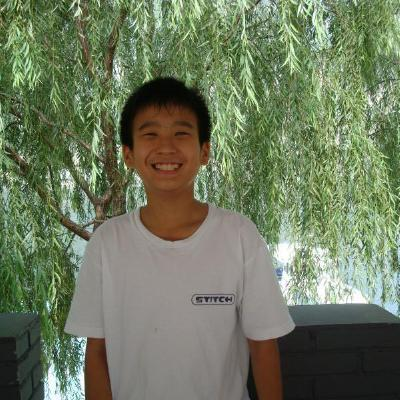

Leyang Cui （崔乐阳）
I am a senior researcher at Natural Language Processing Center, Tencent AI lab.
I obtained my Ph.D. degree at Zhejiang University and Westlake University, advised by Prof. Yue Zhang. My research interests include sequence labeling, syntactic parsing, and chatbot.
Email /
Google Scholar /
DBLP
News
Jun. 2022: Invited to serve as Area Chair (Dialogue and Interactive Systems) at EMNLP 2022.
Experience
Jun. 2021 - Dec. 2021, Research Intern, Pattern Recognition Center, Wechat, Tencent. Advised by Fandong Meng
Nov. 2020 - May. 2021, Research Intern, NLC Group, MSRA. Advised by Yu Wu and Shujie Liu
Jun. 2019 - Sep. 2019, Research Intern, NLC Group, MSRA. Advised by Yu Wu and Shujie Liu
Sep. 2017 - Apr. 2018, Research Intern, NLP Department, I2R, ASTAR. Advised by Anh Tuan Luu
Publications
(*: Equal contribution, †: Corresponding author)
Conference Papers:
- Cross-domain Generalization for AMR Parsing
Xuefeng Bai, Sen Yang, Leyang Cui, Linfeng Song, Yue Zhang
EMNLP 2022
- Multi-Granularity Optimization for Non-Autoregressive Translation
Yafu Li, Leyang Cui†, Yongjing Yin, Yue Zhang†
EMNLP 2022
- FactMix: Using a Few Labeled In-domain Examples to Generalize to Cross-domain Named Entity Recognition
Linyi Yang, Lifan Yuan, Leyang Cui, Wenyang Gao, Yue Zhang
COLING 2022
- Towards Robust Online Dialogue Response Generation
Leyang Cui, Fandong Meng, Yijin Liu, Jie Zhou, Yue Zhang
Pre-print
- Investigating Non-local Features for Neural Constituency Parsing
Leyang Cui*, Sen Yang*, Yue Zhang
ACL 2022
- Challenges to Open-Domain Constituency Parsing
Sen Yang, Leyang Cui, Ruoxi Ning, Di Wu, Yue Zhang
Findings of ACL 2022
- Knowledge Enhanced Fine-tuning for Better Handling Unseen Entities in Dialogue Generation
Leyang Cui, Yu Wu, Shujie Liu, Yue Zhang
EMNLP 2021
- Solving Aspect Category Sentiment Analysis as a Text Generation Task
Jian Liu, Zhiyang Teng, Leyang Cui, Hanmeng Liu, Yue Zhang
EMNLP 2021
- Template-based Named Entity Recognition Using BART
Leyang Cui, Yu Wu, Jian Liu, Sen Yang, Yue Zhang
Findings of ACL 2021
- On Commonsense Cues in BERT for Solving Commonsense Tasks
Leyang Cui, Sijie Cheng, Yu Wu, Yue Zhang
Findings of ACL 2021
- Natural Language Inference in Context Investigating Contextual Reasoning over Long Texts
Hangmeng Liu, Leyang Cui, Jian Liu, Yue Zhang
AAAI 2021
- MuTual: A Dataset for Multi-Turn Dialogue Reasoning
Leyang Cui, Yu Wu, Shujie Liu, Yue Zhang, Ming Zhou
ACL 2020
- What Have We Achieved on Text Summarization?
Dandan Huang*, Leyang Cui*, Sen Yang*, Guangsheng Bao, Kun Wang, Jun Xie, Yue Zhang
EMNLP 2020
- Making the Best Use of Review Summary for Sentiment Analysis
Sen Yang*, Leyang Cui*, Jun Xie, Yue Zhang
COLING 2020
- Does Chinese BERT Encode Word Structure?
Yile Wang, Leyang Cui, Yue Zhang
COLING 2020
- LogiQA: A Challenge Dataset for Machine Reading Comprehension with Logical Reasoning
Jian Liu, Leyang Cui, Hanmeng Liu, Dandan Huang, Yile Wang, Yue Zhang
IJCAI 2020
- Evaluating Commonsense in Pre-trained Language Models
Xuhui Zhou, Yue Zhang, Leyang Cui, Dandan Huang
AAAI 2020
- Hierarchically-Refined Label Attention Network for Sequence Labeling
Leyang Cui, Yue Zhang
EMNLP 2019
Journal Papers:
- Label Attention Network for Structured Prediction
Leyang Cui*, Yafu Li*, Yue Zhang
IEEE TASLP 2022
- Improving Skip-gram Embeddings Using BERT
Yile Wang, Leyang Cui, Yue Zhang
IEEE TASLP 2021
Services
Senior Program Committee Members of IJCAI 2021, Area Chair of EMNLP 2022
Program Committee Members of NAACL 2022, ACL 2022, AAAI 2021, ACL 2021, EMNLP 2021, AAAI 2020, EMNLP 2020, COLING 2020, IJCAI 2020.
Awards
Westlake Presidential Award, 2022
Stars of Tomorrow, MSRA, 2021
Outstanding Students, Zhejiang University, 2019, 2020 and 2021
National Scholarship, 2019